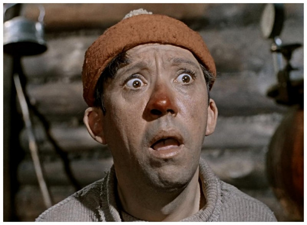
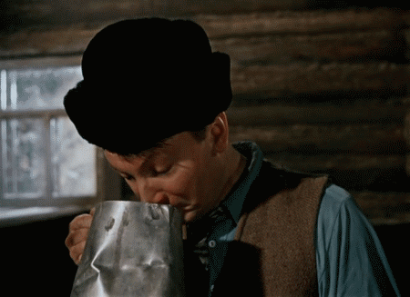

Самогоноварение
Многие люди чаще интересуются – как и чем изготовить самогон на самогонном аппарате. Для приготовления данного алкогольного напитка, называемым домашней водкой или самогоном потребуется опыт и знания, чтобы изготовить качественный продукт. Опыт изготовления самогона придет не с первого раза, и вам придется экспериментировать с различными видами сырья, чтобы получить необходимый мягкий вкус. Самое главное, необходимо соблюдать технологические требования при изготовлении, а также нужно производить температурный контроль на любом этапе изготовления - начиная от браги и оканчивая очисткой самогона при домашних условиях.
Основными этапами изготовления самогона являются:Этап первый. Выбор необходимого сырья (Картинка ссылкой из интернета)

При изготовлении домашней водки необходимо подобрать нужное сырье, которое впоследствии станет выделять спирт при варении. Сырье для изготовления самогона является доступным, все зависит от выбора и цены на сам продукт. Известно, что крахмал может выделять больше спирта, чем сам картофель. Однако, многие, кто испробовал крахмал в качестве сырья, говорят, что водка получается не очень хорошей и дешевой на вкус. Если изготавливать хороший и качественный алкогольный напиток, то нужно использовать свежий картофель, но в данном случае потребуется обработка, нужно будет дважды или трижды перегонять полученный спирт, чтобы добиться его чистоты. Многие специалисты, кто уже не первый раз занимаются изготовлением самогона, утверждают, что лучшим сырьем являются зерновые культуры. Они придают напитку более мягкий вкус по сравнению с другими сырьем. Следует учитывать, что при подборе зерна нужно знать и коэффициенты выделения спирта. Килограмм гречихи может выработать около 470 миллилитров спирта, овес 360 миллилитров, пшеница – 430, рис – почти 600, ячмень 340 миллилитра. Данные ингредиенты доступны на рынке и невелики по цене. Стоит отметить, что наиболее качественной водкой является изготовление ее из фруктов и ягод. Однако, фрукты и ягоды являются дорогими, и если у вас нет собственного сада, то лучше остановиться на выборе зерновых культур.
Те, кто впервые начинает заниматься изготовлением самогона в домашних условиях, следует начать с зерна. Впоследствии, когда вы наберетесь опыта, вы сможете начать экспериментировать с другим видом сырья, чтобы получать более качественный и хороший на вкус продукт. Далее будет описан пример выработки самогона с помощью доступного на рынке ячменя.
Этап второй. Изначальная подготовка и обработка сырья
Этот этап можно разделить на две части – проращивание зерна (приготовление солода) и изготовление раствора. Для получения хорошего качества домашней водки необходимо качественно приготовить солод. В процессе правильного проращивания, внутри зерна образуются различные ферменты в активном виде, которые нужны для последующего этапа - изготовление браги для выработки спирта.
Зерно следует отсортировать. Нужно пропустить зерно через крупное сито, затем можно воспользоваться мелким ситом, чтобы избавиться от мелких частиц. После этого процесса, зерно обязательно нужно промыть в воде, температура которой не должна быть выше пятидесяти пяти градусов по Цельсию.После этого необходимо замачивать промытое зерно. Нужно использовать чистую деревянную тару или посуду с эмалированным покрытием. При заливании воды в тару с зерном могут всплыть различные мелкие частицы, и их следует сразу удалить. Воду добавлять необходимо не сразу, а постепенно, что поможет без затруднений избавиться от мусора. Вода, в которой происходит замачивание зерна, нуждается в постоянной замене каждые семь часов.
Сам процесс замачивания является долгим. Может потребоваться несколько суток, и это будет зависеть от качества сырья. Для определения готовности зерна к следующему этапу, необходимо проверить его и снять с него шелуху. Шелуха должна легко отделяться, а само зерно при сгибании не должно ломаться. При наличии маленького ростка на зерне, процесс замачивания можно считать оконченным и нужно переходить к отращиванию.
Отращивание солода нуждается в полном контроле. Влажность воздуха в помещении должно быть не ниже 40%. Температуру следует держать не выше 18 градусов по Цельсию. Сам процесс ращения солода занимает несколько недель и важной неделей является первая. Зерно нужно высыпать на противень слоем не больше трех сантиметров по толщине. Обязательно надо накрыть зерно куском ткани, которая смочена в воде. Смачивать ткань необходимо каждые 6 часов, или нужно следить за высыханием ткани. Чтобы убедиться в окончании данного этапа, то длина ростков зерен должна достигать 5-6 миллиметров, а корешка до 12-14 миллиметров. В этот момент можно заканчивать ращение и переходить к сушке.Сушка солода является главным этапом, в котором следует постоянно следить за просушкой. Солод не должен быть слишком сухим, а также слишком сырым. Зерна следует высыпать на противень и оставить их в теплом помещении, чтобы они немного просохли. Спустя некоторое время, противень выносится на солнце, а если вы занялись изготовлением самогона зимой, то в духовой шкаф. В духовке нужно поддерживать температуру не выше 40 градусов, иначе солод просто пересохнет. Сушить, таким образом, следует до такой степени, пока влажность солода не упадет до трех процентов. После просушки следует прочистить солод и удалить отростки.
После этого можно переходить к приготовлению раствора. Солод необходимо залить водой, температура которой не должна превышать шестьдесят пять градусов по Цельсию и не опускаться ниже пятидесяти пяти. В такой воде зерно выдерживается около десяти минут, после этого вода сливается. Для измельчания солода можно использовать миксер, в который нужно добавлять воду с температурой около 50-55 градусов. Перемешивать эту смесь до тех пор, пока эта смесь не станет однородной массой белого цвета и густой наподобие киселя.
Этап третий. Изготовление браги для выработки спирта
Брожение является сложным процессом, в котором важную роль играет температура и концентрация исходного компонента. Во время этого процесса необходимо тщательно следить за температурой, чтобы она не снижалась ниже 18 градусов и не повышалась выше 24. Именно в промежутках этих температурных диапазонов происходит брожение. Низкая температура не так опасна, как высокая, так как при низкой температуре, дрожжи остаются живыми. При повышении температуры эти дрожжи непригодны для осуществления дальнейшего процесса.
Изготовление браги для самогона из зерна. Зерно необходимо замочить на 3-5 дней и затем его необходимо поместить в теплое место, и прорастить за три дня. После, нужно просушить его около 12-14 часов. Зерно измельчают крупно и добавляют воду при соотношении 1 к 3. В полученную смесь добавляется сахар при расчете – 200граммов на 1 килограмм зерна, дрожжи 50 граммов на килограмм зерна, и затем добавляется солод – на 1 литр воды и 2 килограмма ячменя – 160 грамм солового молока. Данная смесь должна находиться в теплом месте и ей нужно отстояться пару недель. Периодически нужно встряхивать данную смесь и убирать образовавшуюся накипь. Для того, чтобы в эту брагу не попали мелкие частицы мусора, пыли или различные насекомые, то нужно данный сосуд накрыть марлей.Брага для самогона из сахара. Для этого необходимы сахар, вода и дрожжи. Их пропорции должны быть такими – 1: 3: 0,1. Такое же соотношение используется из фруктово-ягодного сырья всех типов.Если делать брагу из картофеля, то берется 7 килограммов картофеля на 10 литров воды, 200 грамм солода или различной смеси солодов, 300 граммов сахара и 150 грамм дрожжей.При изготовлении гороховой браги, необходимо 1 килограмм гороха на 3,5 литров жидкости, 100 грамм солода, 50 грамм дрожжей и 120 грамм сахара.
Самым важным моментом является улавливание зрелой браги. Если вы будете перегонять недозревшую брагу, то качество конечного продукта будет низким. А если перезревшую брагу перегнать, то невозможно получить высококачественный самогон. Опыт улавливания момента созревания браги придет после нескольких попыток. Окончанием данного процесса брожения можно считать, если – брага имеет горьковатый привкус, выделение газа и образование пены полностью прекращается, а также ее запах становится кисловатым и сладким.
Этап четвертый. Перегон самогона
Перегон самогона – нагревание готовой браги до кипения с охлаждением паров спирта. Процесс перегонки имеет отношение к качеству продукта. Для перегонки используются специальные аппараты. В домашних условиях можно использовать различные крышки, с отверстиями для вывода паров по трубке в специальную емкость. По трубке скапливается спиртовой конденсат и поступает в эту емкость. Данная труба проходит через емкость с холодной водой. Это необходимо для того, чтобы охладить пары, чтобы они стали жидкими и поступали в емкость в жидком виде.
Существуют самогонные аппараты, которые можно встретить на рынке. Их стоимость невысока, и приобрести их сможет любой желающий, кто начинает заниматься изготовлением cамогона. Ректификационные колонны можно также использовать для приготовления самогона. Дело в том, что такие аппараты делятся на несколько паровых отсеков с различной высотой. Если на нижнем уровне данной колоны вы будете получать самый мощный концентрат спирта. На верхней части колоны будет пар с низкой концентрацией спирта, да и мягким по вкусу. Таким образом, вы можете вывести несколько видов сорта спирта. Использование мини пивоварни не подходит для изготовления самогона. После первой перегонки получается самогон сырец, после второй и последующей перегонки получается уже качественный самогон с минимальным присутствием сивушных масел. При нескольких перегонках браги можно получить высокую крепость напитка. Не стоит использовать перегону выше пяти раз.Этап четвертый. Перегон самогона
Перегон самогона – нагревание готовой браги до кипения с охлаждением паров спирта. Процесс перегонки имеет отношение к качеству продукта. Для перегонки используются специальные аппараты. В домашних условиях можно использовать различные крышки, с отверстиями для вывода паров по трубке в специальную емкость. По трубке скапливается спиртовой конденсат и поступает в эту емкость. Данная труба проходит через емкость с холодной водой. Это необходимо для того, чтобы охладить пары, чтобы они стали жидкими и поступали в емкость в жидком виде.
Существуют самогонные аппараты, которые можно встретить на рынке. Их стоимость невысока, и приобрести их сможет любой желающий, кто начинает заниматься изготовлением самогона. Ректификационные колонны можно также использовать для приготовления самогона. Дело в том, что такие аппараты делятся на несколько паровых отсеков с различной высотой. Если на нижнем уровне данной колоны вы будете получать самый мощный концентрат спирта. На верхней части колоны будет пар с низкой концентрацией спирта, да и мягким по вкусу. Таким образом, вы можете вывести несколько видов сорта спирта. Использование мини пивоварни не подходит для изготовления самогона. После первой перегонки получается самогон сырец, после второй и последующей перегонки получается уже качественный самогон с минимальным присутствием сивушных масел. При нескольких перегонках браги можно получить высокую крепость напитка. Не стоит использовать перегону выше пяти раз.
Этап пятый. Очищение самогона
Для очистки самогона необходимо использовать древесный уголь или марганцовку. Для изготовления чистейшего продукта, необходимо правильно рассчитать и применить данные способы очистки. Некоторые самогонщики используют активированный уголь, который можно приобрести в любой ближайшей аптеке, однако, данный уголь не имеет активные вещества для чистки. Изготовление древесного угля не требует особых опытов и навыков. Достаточно подобрать дерево не старше пятидесяти лет и очистить от сучков и веток. Из таких дров разжигают костер и дают им прогореть. Когда они прогорят, а жар в них не спадает, то эти угли можно собирать в специальный сосуд, предварительно сдув золу. Обязательно сосуд нужно плотно закрыть, чтобы дать углям потухнуть. После того, как угли остудятся, их необходимо поломать на крупные части, затем просеять через сито. Готовый порошок необходимо использовать из расчета – 50 граммов угля на литр спирта. Эту смесь необходимо взбалтывать около пяти раз за день и дать неделю отстояться, при этом, нет необходимости в взбалтывании. Спустя неделю, водку можно пропустить через фильтр, который можно изготовить из фланелевой ткани.
Также, использование марганцовки может способствовать очищению самогона. Для этого необходимо в холодную кипяченую воду добавить 1-2 грамма марганцовки на литр воды. Затем в водку первой перегонки добавляют данную смесь, перемешивают и необходимо подождать, когда выпадет весь осадок. После этого, водку фильтруют и подвергают перегонке. Однако, после первой перегонки добиться высококачественного продукта невозможно, поэтому необходимо перегнать еще второй раз, иногда и третий.
Стоит отметить, что при перегонке высокоградусной водки, ее нужно разбавлять водой, чтобы добиться концентрации 40-45 градусов, после этого смесь переливается в куб. Нагревается данная жидкость на быстром огне, до 60 градусов по Цельсию, затем снижается нагрев, медленно доводится до кипения. Первый выход, который составит около 3-8 процентов от всего объема, то есть около 40 миллилитров из 1 литра, нельзя использовать для употребления, так как в них имеются быстрозакипающие вредные примеси. Далее, второй выход, идет хороший и готовый к употреблению самого, но после него пойдет третий выход - спирт с низкой концентрацией, которая составляет ниже 40 процентов – его тоже не рекомендуется употреблять, так как в нем имеются огромное количество сивушного масла. Третий выход обязательно нужно перегнать еще раз. После данных цепочек перегонки, полученную домашнюю водку обязательно нужно несколько раз пропустить через фильтр.
Этап шестой. Придание алкогольному напитку определенных качеств – цвет, аромат и вкусовые качества
Окончательный вкус домашней водки можно изменять определенными экстрактами и различными добавками. Необходимо учитывать пропорции при добавлении этих компонентов, а также нужно дать настояться данной смеси не менее пары недель. Если вы хотите получить горький привкус, то вы можете использовать ваниль от 0,5 до 2 граммов на литр. Для горьковатого привкуса подойдет апельсиновая цедра (50-100 граммов), лимонная цедра (60-250 граммов). Для жгучего эффекта привкуса можно использовать гвоздику (0,6 – 3,0 грамма), имбирь (1,5 – 12 граммов). Розмарин (0,5 - 1 грамм) или шафран (0,1 – 0,5 граммов) придадут водке горьковато-прянный привкус.
На этом этапы изготовления самогона, или домашней водки подошел к концу. После настойки с различными экстрактами для придания вкусовых эффектов около двух недель, водка готова к употреблению. Если привкус водки кажется вам дешевым и некачественным, то значит, вы где-то допустили ошибку. Однако, при проведении последующих изготовлений самогона, вы будете точно знать, где именно вы допустили ошибку, и таким образом, вы не только получите опыт в изготовлении домашней водки, но и станете делать высококачественный продукт в домашних условиях, которым не стыдно будет угостить пришедшего к вам гостя домой.